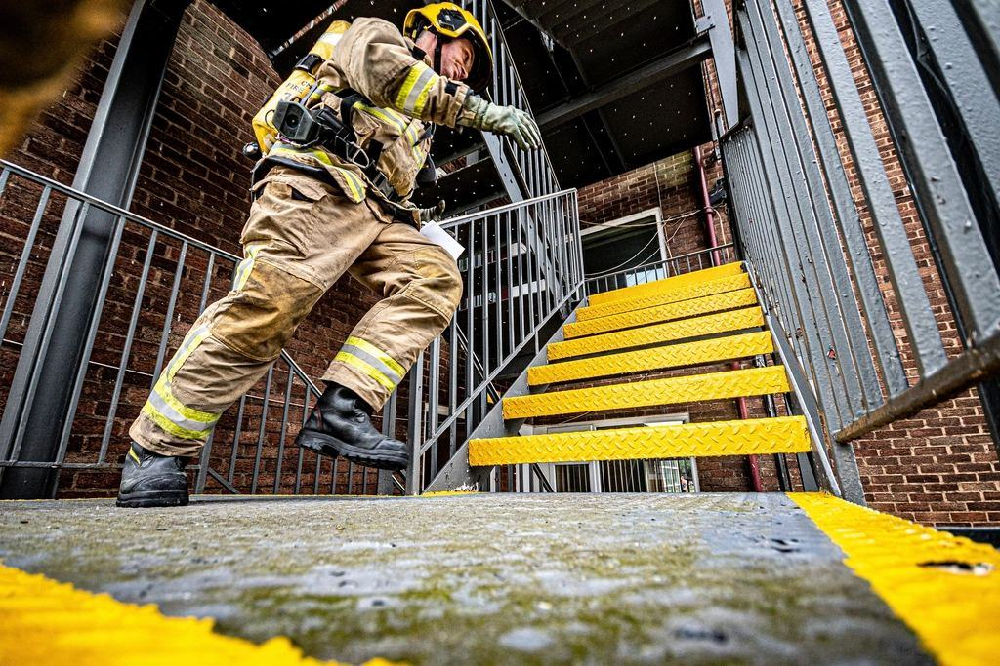

Tjänster
Vi är 26 personer – brandingenjörer, tekniker och två byggnadsantikvarier – med kontor på Riddargatan. Vi tar högst arton nya installationsprojekt per år och arbetar alltid med samma projektledare från första besöket till sista besiktningen.
Vad ska skyddas?

Våningar och residens
Sekelskiftesvåningar har bjälklag av trä, öppna spisar och tak med gipsornament. Vi placerar detektering och släcksystem så att de varken syns eller kräver ingrepp i ytskikten.
Installationen samordnas med er inredningsarkitekt och utförs ofta under en enda sommar.

Kyrkor och kulturbyggnader
En medeltida kyrka kan inte ersättas. Vi projekterar brandlarm med trådlösa detektorer i valven och värmekamera i tornet, där kabeldragning inte är tillåten.
Allt arbete godkänns av stiftets antikvarie och Länsstyrelsen innan vi börjar.

Samlingar och arkiv
Vatten skadar papper, textil och olja. I förråd och arkiv installerar vi släcksystem med inert gas som sänker syrehalten utan att lämna rester.
För utställningsrum föreslår vi vattendimma som ger minimala vattenskador.

Brandteknisk projektering
När ett gammalt hus byggs om räcker sällan Boverkets förenklade regler. Våra brandingenjörer gör analytisk dimensionering och skriver brandskyddsbeskrivningen.
Vi är certifierade sakkunniga och kan också granska andra konsulters handlingar.
Varsamt, i fyra steg
- 1
Förtroligt samtal
Vi börjar med ett möte på plats under tystnadsplikt, ofta tillsammans med er förvaltare eller arkitekt.
- 2

Dokumentation
Antikvarien fotograferar och beskriver ytskikten, och ingenjören tar fram ett förslag med alternativ.
- 3

Varsam installation
Golv och möbler skyddas, damm sugs vid källan och varje dag avslutas med städning.
- 4

Förvaltning
Samma tekniker sköter revisionen varje år, på tider som passar hushållet.
Ingenjörer, antikvarier och certifikat
- Certifierad sakkunnig brandTvå av våra brandingenjörer är certifierade sakkunniga av brandskydd och kan intyga handlingar.
- Anläggarfirma brandlarmCertifierade av SBSC enligt SBF 1008, med egen behörig ingenjör för aspirerande detektering.
- Sakkunnig kulturvärdenBåda våra byggnadsantikvarier är certifierade sakkunniga kulturvärden (CSK).
- ISO 9001 och 14001Certifierat ledningssystem för kvalitet och miljö, inklusive rutiner för tystnadsplikt.